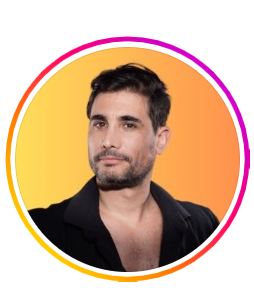
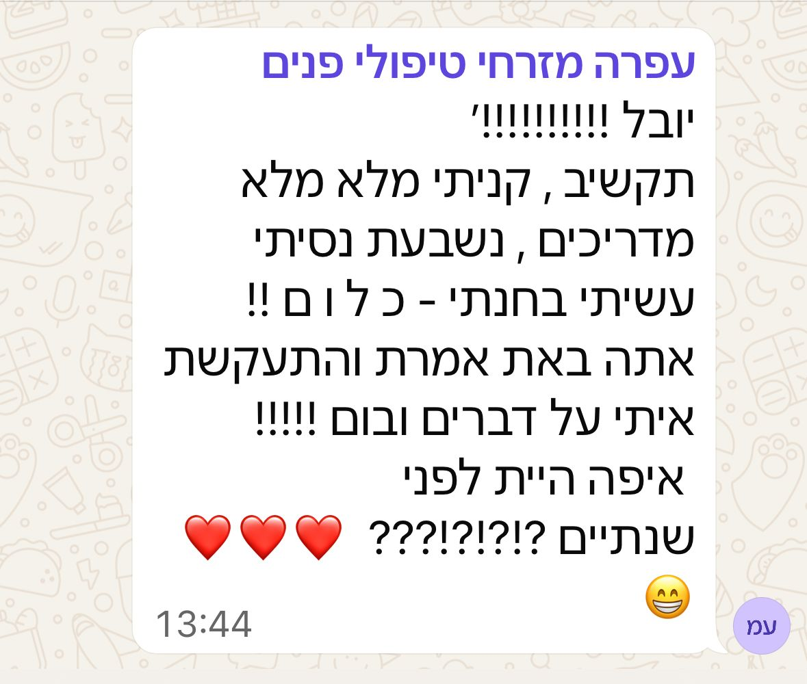

15 שנה. 800 צופים כל לילה. אולם מלא.
ואז יום אחד הבנתי:
הבמה הכי חשובה בעולם
היא בגודל 6 אינץ׳.
אני יובל שלומוביץ׳.
ובמשך 6 השנים האחרונות לימדתי מאות בעלי עסקים
לעשות את מה שלימדו אותי על הבמה:
לגרום לאנשים לעצור ולהקשיב.
אני מכיר אותך.
את/ה מומחה אמיתי בתחום שלך.
עורך דין, מטפלת, יועץ, נדל׳ניסטית.
יש לך ידע שאנשים צריכים לשמוע.
אבל ברשתות?
שקט.
כל פעם שאת/ה חושב/ת ״אולי אצלם סרטון״
צץ הקול הזה:
ובינתיים?
מישהו שמבין פחות ממך בתחום,
מעלה סרטון כל יומיים.
ומקבל את הלקוחות שמגיעים לך.
אני יודע. כי ראיתי את זה שוב ושוב ושוב.
תשמעו רגע מה קורה כשעושים את זה נכון:
״הוואטסאפ מפוצץ מהבוקר. השיווק הכי גדול שעשית לי בחיים.״
הדבר הכי מתסכל?
את/ה יודע/ת שאת/ה טוב יותר.
שהידע שלך עמוק יותר.
שהניסיון שלך אמיתי.
אבל הבן אדם שמולך ברשתות,
זה שמפרסם כל יום,
זה שנראה ״כריזמטי״ ופתוח?
הוא מקבל את הלקוחות. והידע שלך נשאר חסוי.
וזה לא בגלל שאת/ה לא מספיק טוב/ה.
זה בגלל שאף אחד לא לימד אותך איך להראות את מה שאת/ה כבר יודע/ת.
ופה אני נכנס לתמונה.
בינתיים, עפרה מזרחי (טיפולי פנים) שלחה לי את ההודעה הזו:

עפרה מזרחי, טיפולי פנים
הסיפור שלי
15 שנה עמדתי על במת הבימה.
התיאטרון הלאומי.
כל לילה, 800 אנשים מולי.
ולמדתי דבר אחד שרוב האנשים לא מבינים:
כריזמה היא לא כישרון.
זו מיומנות.
נוכחות. הגשה. דיקציה. שליטה בקצב.
היכולת לגרום לחדר שלם לעצור ולהקשיב.
את כל זה אפשר ללמוד.
לימדו אותי את זה. ואני מלמד את זה כבר שנים.
יום אחד לקחתי את הכלים האלה
מהבמה הגדולה לבמה הקטנה.
הדלקתי מצלמה. התחלתי ליצור תוכן.
וגיליתי שהכלים עובדים בדיוק אותו דבר.
250,000 עוקבים לא הגיעו מקסם.
הם הגיעו משיטה.
ואת השיטה הזו? אפשר ללמוד.
אל תקחו את המילה שלי. תקשיבו לה:
״התחלתי עם 2,900 עוקבים. תוך שלושה שבועות הכפלתי. פתאום בום. לידים, סגירות, הכל עלה.״
מה בניתי בשבילך
אחרי שנים של ליווי בעלי עסקים,
בניתי תוכנית שלוקחת את כל מה שלמדתי
על הבמה וברשתות
ומעבירה את זה אליך.
SOCIAL MASTER
תוכנית ליווי דו-חודשית.
לא קורס מוקלט שנשאר על המדף.
ליווי אמיתי. איתי. צעד אחרי צעד.
מפגש פתיחה אישי רק אני ואת/ה
נשב, נבין מה התחום שלך, מי הקהל שלך, ונבנה אסטרטגיית תוכן שמתאימה בדיוק לך. לא תבנית גנרית. משהו שעובד לך.
פיצוח הנוסחה
מה עושה תוכן ויראלי. איך כותבים הוק שעוצר גלילה. איך בונים תסריט שעובד. אני אראה לך בדיוק מה עושים הסרטונים שעפים.
שליטה בכלים
עריכה, כתוביות, AI, Canva. הכל מהטלפון, הכל בקלות. לא צריך להיות טכנולוג.
מגנט לידים
איך להפוך צפייה בסרטון ללקוח שמשאיר פרטים. משפך שיווקי שעובד 24/7 גם כשאת/ה ישנ/ה.
AI כשותף
הכלים החדשים שחוסכים שעות עבודה ומייצרים תוכן ברמה גבוהה. אני אראה לך בדיוק איך משתמשים בהם.
הנדסת ויראליות
למה סרטונים מסוימים עפים ואחרים לא. איך קוראים את הנתונים. ומה עושים עם הרגעים שעובדים.
תדלוק לפני המראה
יישור קו. חיזוק מה שצריך חיזוק. תוכנית פעולה קדימה. ואת/ה ממריא/ה.
ולאורך כל הדרך? אני זמין.
שאלות, פידבקים, תקיעויות. לא לבד בזה.
+ קהילת בוגרים בוואטסאפ. שיתופי פעולה, רעיונות, ותמיכה גם אחרי שהתוכנית נגמרת.
ועוד תוצאה שלא תאמינו:
״התחלתי עם 22 עוקבים. הגעתי ל-570. סרטון אחד הגיע ל-80,000 צפיות. אלוף!״
יש רגע שאני אוהב יותר מכל.
זה הרגע שבו בן אדם שהגיע אליי
עם חשש, עם ״אני לא יודע אם אני מתאים לזה״,
עם ״אולי אני לא מספיק כריזמטי״...
פתאום עושה את הסרטון הראשון שלו.
ומגלה שזה עובד.
הלייקים עולים. ההודעות מתחילות להגיע.
והביטחון? הוא משתנה מהיסוד.
זה לא קסם. זה לא מזל.
זו שיטה שעובדת.
תשמעו מה קורה כשהשיטה עובדת:
״הטיקטוק שלי 16 אלף עוקבים. לידים מגיעים אורגנית. הצפיות עומדות על מיליון, שתי מיליון.״
עכשיו תעצמו עיניים לרגע.
חודשיים מהיום.
את/ה מדליק/ה את המצלמה.
בלי לחשוב שעה מה להגיד.
בלי לצלם 14 טייקים.
פשוט מדבר/ת. בביטחון. בטבעיות.
הסרטון עולה.
ההודעות מתחילות להגיע:
״ראיתי את הסרטון שלך. אני רוצה לשמוע עוד.״
הפרופיל שלך נראה אחרת.
לא חשבון ריק עם 3 פוסטים מלפני שנה.
מותג אישי חי, עם תוכן קבוע, עם קהל שמגיב ומשתף.
ולקוחות? הם מגיעים. מהרשתות.
בלי פרסום ממומן. בלי לרדוף אחרי אף אחד.
זה לא פנטזיה.
זה מה שקורה כשיש שיטה, כלים,
ומישהו שמלווה אותך עד שזה עובד.
שיחה קצרה. אני שומע מה המצב, ואומר בכנות אם התוכנית מתאימה.
והנה עוד סיפור שאני גאה בו:
״מ-37K ל-60K עוקבים. כל פעם שאני פותחת אינסטגרם, עוד ועוד.״
אני לא מלמד תיאוריות.
כל מה שאני מעביר בתוכנית,
אני עושה בעצמי. כל יום. ברשתות.
אני יודע מה זה לעמוד מול מצלמה ולהרגיש
שאף אחד לא מקשיב. אני יודע מה זה סרטון
שלא עובד. ואני יודע בדיוק מה צריך לשנות.
זו לא תוכנית שמלמדת ״איך להעלות סרטון״.
זו תוכנית שמלמדת אותך להשתמש במצלמה
ככלי עסקי שמייצר סמכות, אמון, ולקוחות.
ויש גם את הצד האנושי:
״הנדיבות, הנתינה, והאישיות שלך. כמו מישהו ששם לך פה על הכתף.״
״מי שעושה את הסרטונים האלה? גאוני. באמת גאוני. אין מילה אחרת.״
למי התוכנית הזו מתאימה
(ולמי לא)
מתאים לך אם:
- יש לך עסק, שירות, או מומחיות שאנשים צריכים לדעת עליהם
- את/ה יודע/ת שהרשתות זה המקום להיות בו, אבל לא יודע/ת איך להתחיל (או להתחיל מחדש)
- את/ה מוכן/ה להשקיע חודשיים של עבודה אמיתית, לא לחפש קסמים
- את/ה רוצה לקוחות מהרשתות, לא רק לייקים
לא מתאים לך אם:
- את/ה מחפש/ת פתרון קסם שיעשה אותך ויראלי/ת מחר בבוקר
- אין לך 2-3 שעות בשבוע להשקיע ביצירת תוכן
- את/ה לא בעל/ת עסק ולא מתכנן/ת להיות
- את/ה מחפש/ת שמישהו יעשה את זה בשבילך (יש סוכנויות לזה, אני מלמד אותך לעשות לבד)
שאלות ששואלים לפני שמתחילים
הבמה פנויה.
השאלה אם את/ה עולה.
כל יום שעובר, עוד בעלי עסקים בתחום שלך מפרסמים תוכן ותופסים את הלקוחות שיכלו להגיע אליך.
את/ה לא צריך/ה להמציא את הגלגל. את/ה צריך/ה מישהו שכבר עשה את זה, ויראה לך בדיוק איך.
השאר/י פרטים. אחזור אליך תוך 24 שעות לשיחה קצרה. בלי לחץ, בלי התחייבות.
שיחת ההיכרות בלי עלות ובלי התחייבות. אם התוכנית לא מתאימה לך, אגיד את זה בכנות.